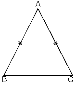
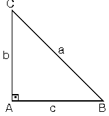
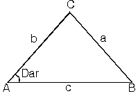
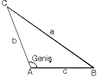
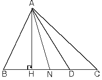
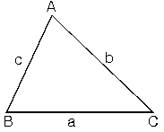
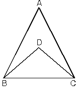
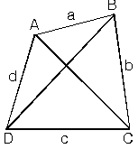
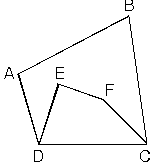
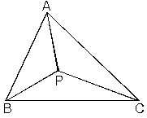

ABC üçgeninde m(A) > m(B) > m(C)
a > b > c
Terside geçerlidir. Uzun kenarı gören açı kısa kenarı gören açıdan daha büyüktür.
İkizkenar üçgenden de bildiğimiz gibi eşit açıların karşılarındaki kenarlar eşittir.
| m(B) = m(C) => |AB| = |AC|m(A) < m(B) = m(C) ise
|BC| < |AB| = |AC| olur. |
 |
| 2. Bir üçgende herhangi bir kenarın uzunluğu diğer iki kenarın uzunlukları toplamından küçük farkının mutlak değerinden büyüktür.ABC üçgeninde
Diğer kenarlar için de aynı durum geçerlidir. |a – c| < b < (a + c) ve |a – b| < c < (a + b) olur. |
| 3. Dik, dar ve geniş açılı üçgenlerde kenarlar arasındaki ilişkiler.a. Bir dik üçgende
kenarlar arasında a2 = b2 + c2 bağıntısı vardır. |
 |
| b. Dar açılı üçgenb ve c sabit tutulup A açısı küçültülürse a da küçülür.
|
 |
| c. Geniş açılı üçgen b ve c sabit tutulup A açısı büyütülürse a da büyür.
|
 |
| 4. Çeşitkenar bir üçgende aynı köşeden çizilen yükseklik, açıortay ve kenarortay uzunluklarının sıralanması, |  |
|AH| = ha ; yükseklik
|AN| = nA ; açıortay
|AD| = Va ; kenarortay
| ha< nA <Va |
5. Çeşitkenar bir üçgende, açı, açıortay, kenarortay ve yükseklik arasındaki sıralama;
| ABC üçgeninde a, b, c kenar uzunluklarıdır.m(A) > m(B) > m(C) olduğuna varsayalım.
Bu durumda üçgende |
 |
kenarlar : a > b > c
yükseklikler : ha < hb < hc
Açıortaylar : nA < nB < nC
Kenarortaylar : Va < Vb < Vc
şeklinde sıralanırlar. Yani üçgenin yardımcı elemanları kenarlarının sırasına ters olarak sıralanır.
| 6. Bir kenarları ortak olan içiçe iki üçgenden içtekinin çevresi daha küçük olur.
|
 |
|
 |
a + c < |AC| + |BD| ve b + d < |AC| + |BD|
köşegen uzunlukları toplamı çevreden daha büyük ve çevrenin yarısından daha küçük olamaz.
|
 |
| 7. ABC üçgeninin içindeki herhangi bir P noktası için;|AP| + |BP| + |CP|
toplamı ABC üçgeninin çevresinden büyük, çevresinin yarısından küçük olamaz. |
 | |
|
||